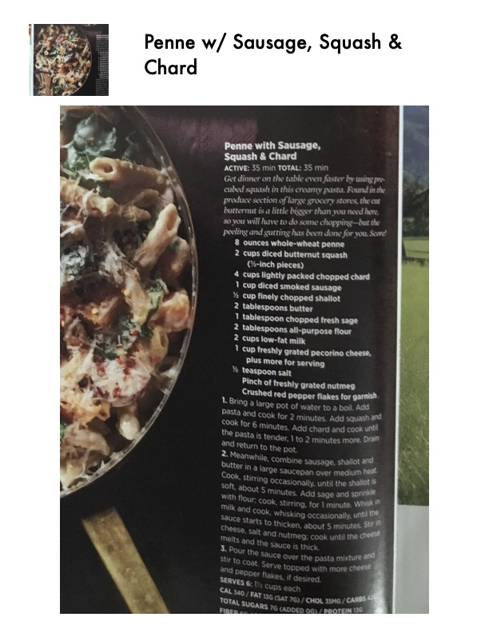

Penne w/ Sausage, Squash &

Original cookbook page 51
Ingredients
- 2 teaspoon AS hy
Instructions
- tS OCEN TOoNe for Vo ounces whole-wheat penne Cups diced butternut squash (-inch pieces) Cups lightly packed chopped chard cup diced smoked RSENS.
- Tes) Pe BT yi) ated ere lie Bain ety tablespoons butter tablespoon chopped fresh sage tablespoons all-purpose flour Cups low-fat milk Smelt ete pecorino cheese, re nts serving 2 teaspoon AS hy ara Mey freshly grated nutmeg Crushed red Pepper flakes for garnish
Recipe #51 from collection